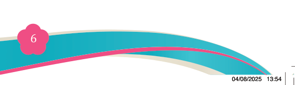
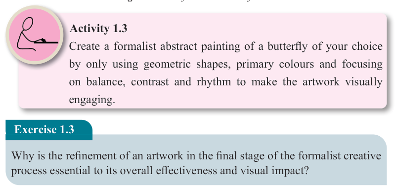

Fine Art for Secondary Schools

6

Student’s Book Form Two

Figure 1.6: A refined decorative flower
Activity 1.3
Create a formalist abstract painting of a butterfly of your choice by only using geometric shapes, primary colours and focusing on balance, contrast and rhythm to make the artwork visually engaging.
Exercise 1.3
Why is the refinement of an artwork in the final stage of the formalist creative process essential to its overall effectiveness and visual impact?
Analysing artwork by using formalism theory
Formalist analysis focuses on examining artwork’s visual and structural elements
rather than symbolic meaning, historical content or emotional impact. The following
guides help you to analyse art in a formalist approach.
(a) Observe the artwork objectively: Examine the artwork by focusing on its visual elements and the way everything is arranged, without interpreting its mood or social message.
(b) Examine the basic visual elements: Identify the visual components that make up the artwork and examine how they are created. For example, determine how the lines, colour, shape, texture and space are used within the artwork.
(c) Analyse the principles of design: Determine how balance, unity, contrast and proportion are organised within the overall composition.
04/08/2025 13:54